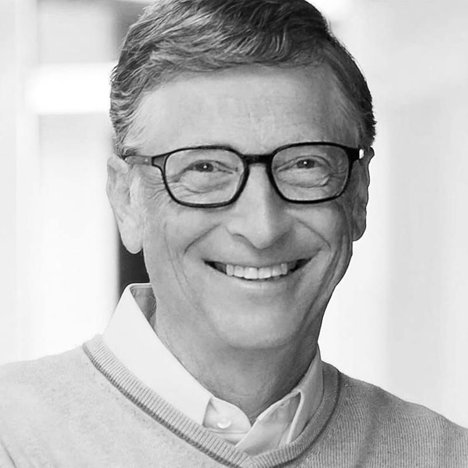

What is poverty
When you think about poverty, what comes to mind? It’s probably an image of a person who doesn’t have enough (good) food to eat, lives in a shabby home—or no home at all. And they probably can’t afford to buy the goods and services you normally take for granted. You’re not wrong, but the complexity of poverty may surprise you.
Poverty is not just about money, but also includes issues of access to services such as health care and education, marginalization and exclusion. Learn about these complexities and how World Vision has been partnering with donors to reduce poverty in the world’s most vulnerable places.

“Foreign Assistance is not an end in itself. The purpose of aid must be to create the conditions where it is no longer needed.”
– President Barack Obama
“As the wealthiest nation on Earth, I believe the United States has a moral obligation to lead the fight against hunger and malnutrition, and to partner with others.”
– President Barack Obama

“We are living in a phenomenal age. If we can spend the early decades of the 21st century finding approaches that meet the needs of the poor in ways that generate profits and recognition for business, we will have found a sustainable way to reduce poverty in the world.”
– Bill Gates

“The test of our progress is not whether we add more to the abundance of those who have much; it is whether we provide enough for those who have too little.”
– President Franklin D. Roosevelt
Poverty state of Sri lanka
Sri Lanka is a pearl-shaped Island nation in South Asia, lying on the Indian Plate, a major tectonic plate that was formerly part of the Indo-Australian Plate. It is in the Indian Ocean southwest of the Bay of Bengal, between latitudes 5° and 10° N, and longitudes 79° and 82° E. Sri Lanka is separated from the mainland portion of the Indian subcontinent by the Gulf of Mannar and Palk Strait.
According to Hindu mythology, a land bridge existed between the Indian mainland and Sri Lanka. It now amounts to only a chain of limestone shoals remaining above sea level. Legends claim that it was passable on foot up to 1480 CE, until cyclones deepened the channel. Portions are still as shallow as 1 metre (3 ft), hindering navigation.[150] The island consists mostly of flat to rolling coastal plains, with mountains rising only in the south-central part. The highest point is Pidurutalagala, reaching 2,524 metres (8,281 ft) above sea level. Sri Lanka has 103 rivers. The longest of these is the Mahaweli River, extending 335 kilometres (208 mi). These waterways give rise to 51 natural waterfalls of 10 metres (33 ft) or more. The highest is Bambarakanda Falls, with a height of 263 metres (863 ft).[152] Sri Lanka's coastline is 1,585 km (985 mi) long. Sri Lanka claims an exclusive economic zone extending 200 nautical miles, which is approximately 6.7 times Sri Lanka's land area. The coastline and adjacent waters support highly productive marine ecosystems such as fringing coral reefs and shallow beds of coastal and estuarine seagrasses. Sri Lanka has 45 estuaries and 40 lagoons. Sri Lanka's mangrove ecosystem spans over 7,000 hectares and played a vital role in buffering the force of the waves in the 2004 Indian Ocean tsunami. The island is rich in minerals such as ilmenite, feldspar, graphite, silica, kaolin, mica and thorium. Existence of petroleum and gas in the Gulf of Mannar has also been confirmed, and the extraction of recoverable quantities is underway.Read more.
Index wise rankings
1.Finland

Finland was inhabited around 9000 BC after the last glacial period. The stone age introduced several different ceramic styles and cultures, the bronze age and iron age were characterized by extensive contacts with other cultures in Fennoscandia and the Baltic region. Lying approximately between latitudes 60o and 70o N, and longitudes 20o and 32 o F, finland is one of the world's northernmost countries. Of world capital only Reykjavik lies more to the north than Helsinki. The distance from the southernmost point Ó Hanko in Uusimaa Ó to the northernmost Ó Nuorgam in Lapland Ó is 1,160 kilometers (720 mi). much of the geography of finland is a result of the ice age. The glaciers were thicker and lasted longer in Fennoscandia compared with the rest of Europe. Their eroding effects have left the finnish landscape mostly flat with few hills and fewer mountains. The economy of finland has a per capita output equal to that of other European economies such as those of France, Germany, Belgium or the UK. The largest sector of the economy is the service sector at 66% of GDP. Followed b manufacturing and refining at 31%. Primary production represents 2.9%. with respect to foreign trade, te key economic sector is manufacturing. The largest industries in 2007 were electronics (22%); machinery, vehicles and other engineered metal products (21.1%); forest industry (13%); and chemicals (11%), the gross domestic product peaked in 2008, as of 2015, the country's economy is at the 2006 level. read more
2.Denmark

Located in Northern Europe, Denmark consists of the peninsula of Jutland and 443 named islands (1,419 islands above 100 square metres (1,100 sq ft) in total Of these, 74 are inhabited (January 2015),[56] with the largest being Zealand, the North Jutlandic Island, and Funen. The island of Bornholm is located east of the rest of the country, in the Baltic Sea. Many of the larger islands are connected by bridges; the resound Bridge connects Zealand with Sweden; the Great Belt Bridge connects Funen with Zealand; and the Little Belt Bridge connects Jutland with Funen. Ferries or small aircraft connect to the smaller islands. The four cities with populations over 100,000 are the capital Copenhagen on Zealand; Aarhus and Aalborg in Jutland; and Odense on Funen. Denmark has a developed mixed economy that is classed as a high-income economy by the World Bank. In 2017, it ranked 16th in the world in terms of gross national income (PPP) per capita and 10th in nominal GNI per capita. Denmark's economy stands out as one of the most free in the Index of Economic Freedom and the Economic Freedom of the World. It is the 10th most competitive economy in the world, and 6th in Europe, according to the World Economic Forum in its Global Competitiveness Report 2018. Denmark has the fourth highest ratio of tertiary degree holders in the world. The country ranks highest in the world for workers' rights. GDP per hour worked was the 13th highest in 2009. The country has a market income inequality close to the OECD average, but after taxes and public cash transfers the income inequality is considerably lower. According to Eurostat, Denmark's Gini coefficient for disposable income was the 7th-lowest among EU countries in 2017
read more
3.Sweden

Situated in northern Europe, Sweden lies west of the Baltic sea and gulf of bothnia, providing a long coastline, and forms the eastern part of the Scandinavian peninsula. To the west is the Scandinavian mountain chain (Skanderna), a range that separates sweden from norway, finland is located to its north-east. It has maritime borders with Denmark, Germany, Poland, Russia, Lithuania, Latvia and Estonia, and it is also linked to Denmark(south-west) by the Oresund bridge. Its border with Norway is the longest uninterrupted border within Europe. Sweden lies between latitudes 55o and 70o N, and mostly between longitudes 11o and 25o E (part of stora drammen island is just west of 110). At 449,964 km2 sweden is the 55th largest country in the world, the fifth – largest country in europe, and the largest country in northern Europe. The lowest elevation in Sweden is in the ba of lake hammarsjon, near Kristianstad, at -2.41 m (-7.91 ft) below sea level. The highest point is Kebnekaise at 2,111 m(6,926 ft) above sear level. Sweden is the sixteenth richest country in the world in terms of GDP (gross domestic product) per capita and a high standard of living is experienced by its citizens. Sweden is an export – oriented mixed economy. Timber, hydropower and iron ore constitute the resourse base of an economy with a heavy emphasis on foreign trade. Sweden's engineering sector accounts for 50% of output and exports, while telecommunications, the automotive industry and the pharamaceutical industries are also of great importance, Sweden is the ninth – largest arms exporter in the world. Agriculture accounts for 2% GDP and employment. The country ranks among the highest for tephone and internet access penetration. The total resident population of Sweden was 10,377 in October 2020. The population exceeded to 10 million for the first time on Friday 20 january 2017read more